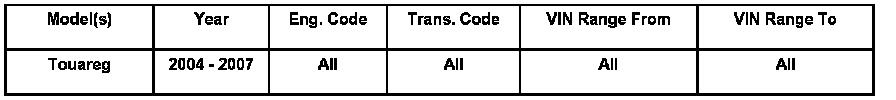
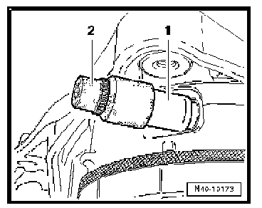
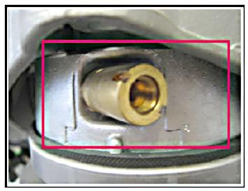
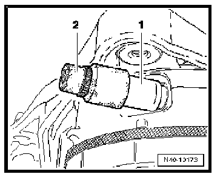
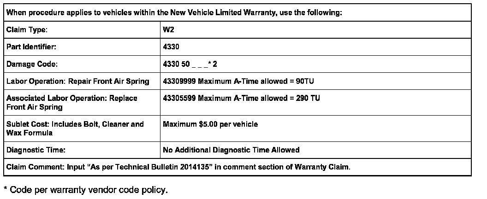
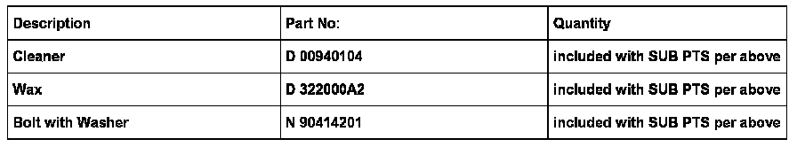
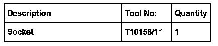

Suspension - Vehicle Sags After Sitting
ConditionVehicle Front Ride Height Incorrect after Stationary Period

43 07 01 Jan. 29, 2007 2014135
Self-Leveling air spring system may not lower or vehicle may rest slanted after a stationary period. Upon restart, MFI displays a warning for "Running Gear Fault"
Technical Background
Proper function of the residual pressure valve is affected by corrosion. As a result, the air spring dampener loses pressure.
Production Solution
A new coating process of the valve attachment area on the damper during manufacturing.
Service
- Follow Guided Fault Finding diagnosis for the Self-Leveling air spring system according to the repair manual. See Repair Manual Group 43, Self-Leveling air spring system, Air spring dampers and level regulation, troubleshooting.
If the residual pressure retaining valve is the cause of the fault, continue as follows:
- Raise and support the vehicle to access to the upper portion of the air dampener and the residual pressure valve.
- Thoroughly clean the area with a high pressure cleaner. As necessary, use plastic wedge 3409 for heavy deposits.
NOTE: Ensure that the air spring boot is not damaged by the high pressure cleaning, protect as necessary.
DO NOT use metal objects or a wire brush during cleaning.
- Dry the cleaned area well, with compressed air.
NOTE: The following procedure must be performed without delay between individual steps.

- Remove the residual pressure retaining valve -1- using special tool T10158/1 -2-, see Repair Manual group 40 Front Air Spring Shock Absorber in ElsaWeb.
Tip: Ensure that no moisture or dirt can get into the air spring. If the residual pressure retaining valve breaks off during removal, install a new air spring (DO NOT replace a complete dampener assembly).
- Install clean hardware bolt # N 90414201 (M10 bolt with washer) in the residual pressure retaining valve hole. Clean the area with cleaner D 00940104 (all purpose cleaner), then dry area thoroughly afterwards.

- Mask off the area outside of the red line in the illustration and apply wax material D 322000A2 to the exposed portion.

- Take out the placeholder bolt and install a new residual pressure retaining valve -1- using special tool T10158/1 -2-, see Repair Manual group 40 Front Air Spring Shock Absorber in ElsaWeb.
- Tighten residual pressure retaining valve to 10 Nm (88 in. lbs.).

Warranty


Required Parts and Tools